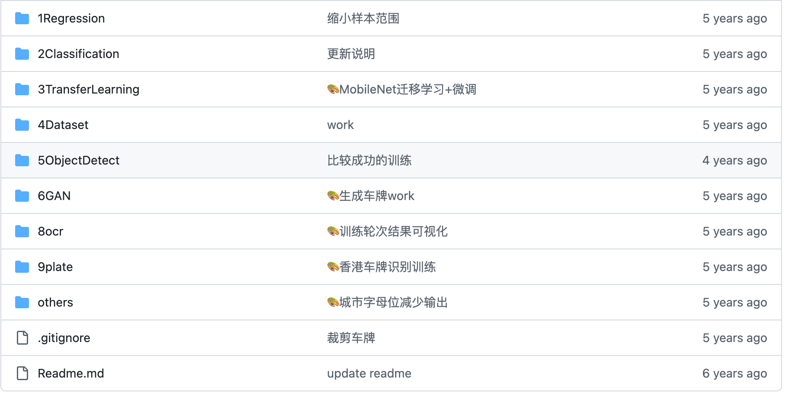
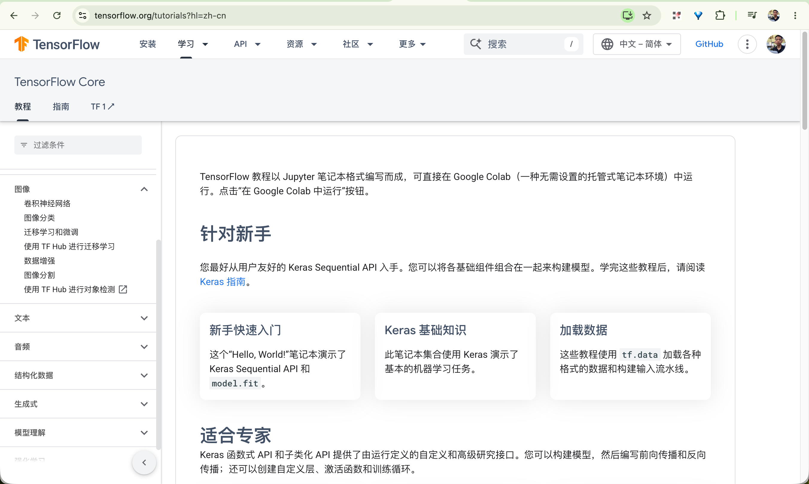
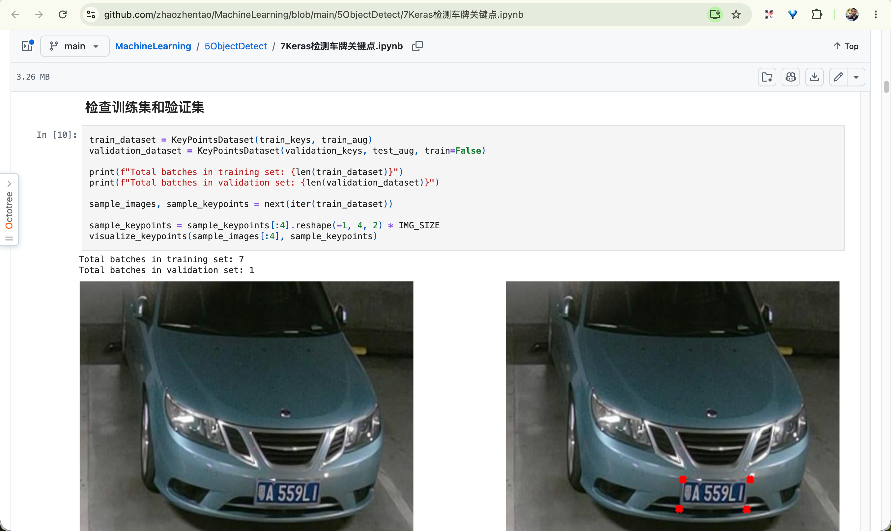
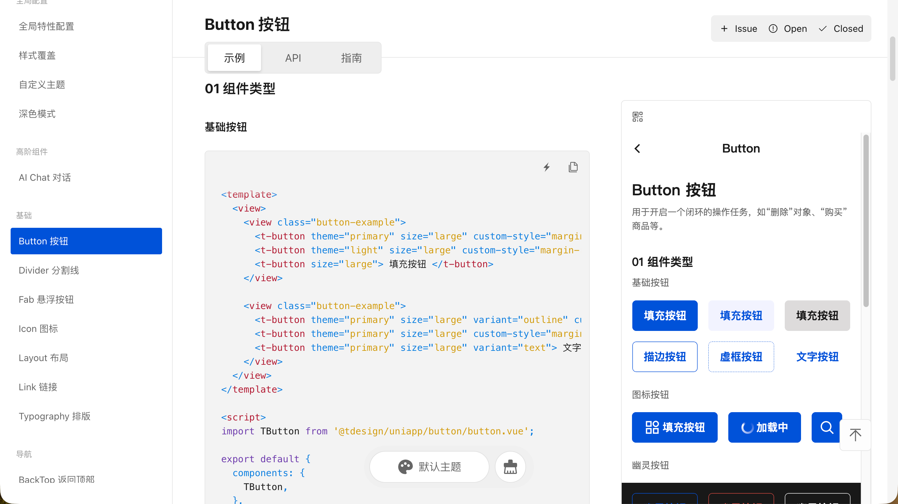
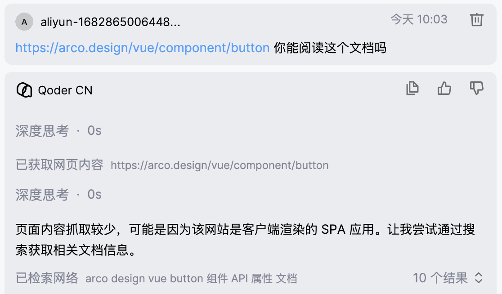
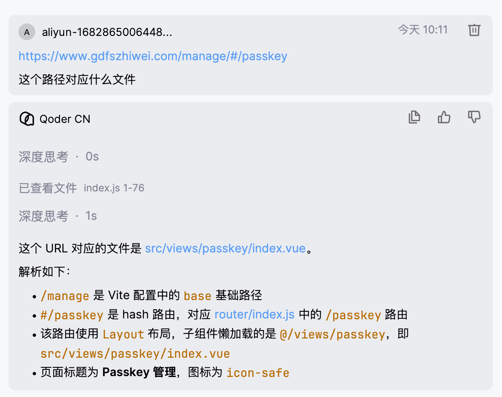
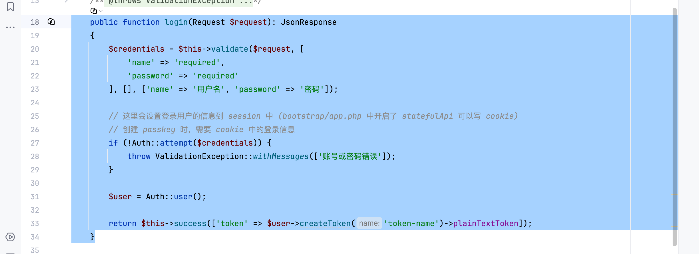
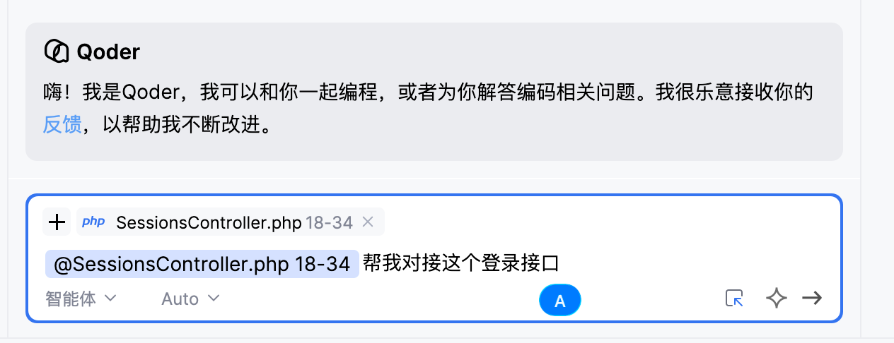
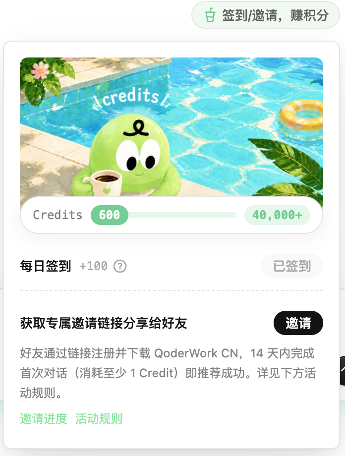

负责的业务系统一：标签管理系统
标签系统主要管理数据标签，用户群等数据。
数据标签可以简单理解为对数据的分类，比如用户标签、商品标签、订单标签等。
| 数据id | 数据名 | 标签id |
|---|---|---|
| 用户1 id | 用户1 姓名 | 学历 |
| 门店1 id | 门店1 店名 | 门店等级 |
其中，统计的数据来源有多种方式：数据湖，用户导入，接口导入等。生成的标签数据，目前可以通过接口，或数据湖创建视图的方式获取。
负责的业务系统二：大客户BCRM系统
BCRM 系统主要包括以下功能。
线索管理：线索的增删查改、线索转商机、线索分配跟进人、招标信息转线索。
招标信息管理：招标信息录入，历史中标记录，招标附件管理，招标信息转线索。
客户管理：客户的增删查改、客户跟进记录、客户公海池管理。
商机管理：商机的增删查改、商机联系人变更、立项信息注册、按阶段统计商机数量和金额。
授权管理：授权的新增/延续，电子签章对接，盖章文件上传下载、审批流对接。
另外还有销售看板，CRM 报表等简单的查询模块。
负责的业务系统三：MDS主数据
接收来自各个上游的数据，然后按需要分发到各个下游业务系统。主要通过消息队列进行数据分发。
我的AI学习路径
最早从 2021 年开始接触 AI 相关，最先接触的是机器学习。一开始主要是在B站中学习李宏毅的课程。
涉及到线性回归、分类、卷积神经网络、生成式对抗网络等话题。
下面是学习过程跟着做的练习记录。

Tensorflow
跟着视频学习了一些基本概念后，开始接触 Tensorflow，官网中有上面各个话题相关的一些例子。

带着任务学习

我对AI的理解
强项：文本理解，编码等。LLM 的文本“阅读”速度和上下文大小远高于人类。
基于文本“理解”能力强这个特性，我在日常中会应用到的一个场景是，让 AI 来读一些文档，然后针对我对文档中的疑问去发起提问，这样从过去的
基于关键字逐个检索，到基于大模型的推理，可以使得文档的阅读速度更快。

（仅限于日常能接触到的大语言模型）
AI 不擅长的地方
在日常编码场景，AI 在一些库的使用上，比如前端 UI 库 Arco Design、 TDesign，以及一些非日常使用的库上，会存在比较大的问题。
而且直接发送文档连接，可能会因为一些网站的反扒策略或渲染问题，导致无法直接阅读，需要人工干预。
启示：如果有希望让AI检索到的信息，应该避免像客户端渲染的这种技术。

我的AI应用实践
场景一：确定文件位置
在日常开发中，比如前端项目，经常会需要根据 url，来定位文件位置，因为不同的开发可能会写出不同的路由规则，在一些复杂的情况下，
往往需要花费大量时间阅读理解路由规则，才能找到目标文件。在 AI 的帮助下，可以大大缩减这样的时间。后端接口也可以采用这种方法定位。

场景二：跨工程搜索
比如我需要在前端项目中，对接这个登录接口，可以在后端项目中选中并复制这段登录接口的代码。然后粘贴到前端项目的 AI 对话中。

粘贴后端接口时，会自动识别出文件路径行号信息，作为对话的上下文，使得对接接口的准确性更高（需要的时候会自动检索更多的后端代码）。

场景三：问题修复
在遇到后端接口问题时，可以把报错的堆栈信息粘贴到 AI 对话中，AI 会根据堆栈信息，自动定位到问题所在行，并给出修复建议。
费用问题
目前 Qoder 仍然处于推广期间，新用户有 300 积分试用。注册多个帐号加每日签到，可以覆盖日常使用。
